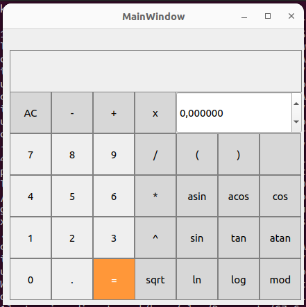

SmartCalc Readme
1. Install SmartCalc
Чтобы установить программу нужно в папке src выполнить команду make или make install
В папке src появится папка build в которой будет файл программы smartcalc, при запуске появится окно:

- Приложение поддерживает базовые арифметические операторы
- Приложение поддерживает использование переменной x
- Приложение также поддерживает функции sin, cos, tan, acos, atan, asin, sqrt, ln и log